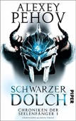

| # |
Autor |
Serie |
Titel |
Format |
Seiten |
Erscheinungsdatum |
Verlag |
Genre |
| 122 |
Christopher Paolini |
Eragon |
1 - Das Vermächtnis der Drachenreiter |
Gebundene Ausgabe |
608 |
Mai 2008 |
cbj |
Fantasy |

1 - Das Vermächtnis der Drachenreiter Christopher Paolini
ISBN: 9783570128039
ListPrice: EUR 19,90
Ausgabe: 15th
Illustrator: Christopher Paolini
Maße: 1.97 x 9.13 x 5.91 in
Übersetzer: Joannis Stefanidis
Herausgeber: Alfred A. Knopf, New York
Serie: Eragon
Wertung: 4.0 (456 Stimmen)
Hinzugefügt am: 10.11.2008
Zusammenfassung: Der fünfzehnjährige Eragon lebt mit Onkel und Cousin in einen kleinen Dorf in der Bergen von Alagaesia. Die Menschen sind arm, das Leben ist hart – aber Eragon gefällt es. Das ändert sich jedoch schlagartig, als er in den Bergen einen geheimnisvollen Stein findet, der sich als Drachenei entpuppt. Denn kaum ist der Drache geschlüpft, gerät Eragons ganze Welt ins Wanken: Brutale Schergen des grausamen Königs Galbatorix jagen ihn, ermorden seinen Onkel und stecken den Hof in Brand. Eragon verliert in einer einzigen Nacht seine Familie und seine Heimat. Und so verlässt er das Dorf und macht sich auf die Suche nach den Mördern.
Dabei steht ihm nicht nur der Drache Saphira zur Seite, sondern auch der alte Brom, ein Geschichtenerzähler mit einer geheimnisvollen Vergangenheit. Er offenbart Eragon nach und nach, warum Galbatorix so versessen darauf ist, Eragon und Saphira zu finden. Der König ist nämlich an die Macht gekommen, indem er die einst mächtigen Drachenreiter vernichtet hat. Und jetzt bedroht mit Eragon ein neuer Drachenreiter sein Imperium. Zuerst versteht Eragon die Furcht des Königs nicht – doch dann lernt er mithilfe von Brom seine magischen Fähigkeiten kennen. Auf ihrer Reise übt er sich in dieser gefährlichen Kunst, aber die bösen Mächte scheinen ihnen immer einen Schritt voraus zu sein. Bis Eragon schließlich das geheime Versteck der Varden findet, die schon seit Jahrzehnten im Verborgenen gegen Galbatorix kämpfen. Alles läuft auf eine entscheidende Schlacht zu ...
Der erst fünfzehnjährige Autor hat mit diesem Buch ein klassisches Fantasy-Epos geschaffen, das alles bietet, was das Herz eines Fantasy-Fans höher schlagen lässt: monströse Urgals und mysteriöse Elfen, kämpferische Zwerge und gefährliche Zauberer, telepathische Drachen und kluge Werkatzen, Magie – und einen jugendlichen Helden, der Schritt für Schritt seine Fähigkeiten entwickelt und seinen Platz in der Welt sucht. Der Beginn krankt ein wenig an dem Hang des Autors zu ausufernden Beschreibungen. Doch die Geschichte nimmt schnell Fahrt auf und lässt einen dann so schnell nicht mehr aus ihren Drachenfängen. Und das Ende lässt hoffen, dass man von Eragon noch mehr lesen wird. Denn nach der großen Schlacht ist seine Reise lange noch nicht zu Ende... "-- Gabi Neumayer"
Themen
Englische Belletristik, Fantasy, Jugendliteratur, Kinder- u. Jugendliteratur, Kinderliteratur, Jugendliteratur, HC/Kinder- und Jugendbücher/Jugendbücher ab 12 Jahre, Jugendromane u. -erzählungen, Kinder-, Drachen, Kinder-/Jugendliteratur, Jury der jungen Leser (Literaturhaus Wien), Jugendbuchpreis
|
| 123 |
Christopher Paolini |
Eragon |
2 - Der Auftrag des Ältesten |
Gebundene Ausgabe |
800 |
Feb. 2007 |
cbj |
Fantasy |

2 - Der Auftrag des Ältesten Christopher Paolini
ISBN: 9783570128046
ListPrice: EUR 19,90
Ausgabe: 13th
Illustrator: Christopher Paolini
Maße: 1.89 x 9.13 x 5.91 in
Übersetzer: Joannis Stefanidis
Herausgeber: Alfred A. Knopf, New York
Serie: Eragon
Wertung: 4.0 (231 Stimmen)
Hinzugefügt am: 10.11.2008
Zusammenfassung: Der erste Teil der Drachenreiter-Trilogie, "Eragon. Das Vermächtnis der Drachenreiter", den der damals 18-jährige Christopher Paolini vorlegte, begeisterte die Leser in aller Welt und brach reihenweise Verkaufsrekorde. Dass der Autor, der nie eine öffentliche Schule besucht hat, damals nicht überschätzt wurde, belegt er nun eindrucksvoll mit "Eragon. Der Auftrag des Ältesten". Auch hier gelingt es Paolini wieder mit erstaunlichem Geschick, die verschiedenen Handlungsstränge souverän aufzubauen, den Spannungsbogen zu halten und die Erzählung zu einem konzisen Ende zu führen.
"Eragon. Der Auftrag des Ältesten" setzt nur drei Tage nach der blutigen Schlacht gegen Galbatorix am Ende des ersten Teils an, aus der Eragon siegreich hervorging. Er hat bewiesen, dass er ein Drachenreiter ist, doch schon wartet das nächste Abenteuer auf ihn. Sein Cousin Roran wird von dunklen Mächten erpresst und zu einer Gefahr für Eragon, der seit der großen Schlacht unter starken Rückenschmerzen leidet. Außerdem lernt Eragon immer mehr über die Macht der Magie. Mit seinem treuen Drachen Saphira kämpft er gegen die finsteren Mächte, die das Dorf Carvahall bedrohen.
Nicht nur an Rorans Beispiel wird deutlich, wie Paolini es in diesem zweiten Band schafft, viele seiner Charaktere noch differenzierter zu zeichnen. Wer zu den Guten und wer zu den Bösen gehört, wird immer weniger eindeutig, so dass Alagaesia, seine Fantasy-Welt, noch bunter und bizarrer wirkt. Es ist beeindruckend, wie elegant Paolini sein umfangreiches Personal dirigiert, ohne sich dabei in Widersprüchen oder Wiederholungen zu verfangen. Leser, die sich für den ersten Teil der Drachenreiter-Trilogie begeistert haben, werden auch in "Eragon. Der Auftrag des Ältesten" auf ihre Kosten kommen. Ohne Frage: Christopher Paolini hat sich noch einmal weiterentwickelt. "--Carsten Hansen"
Themen
Ab 12 Jahre, Englische Belletristik, Fantasy, Jugendliteratur, Kinder- u. Jugendliteratur, Kinderliteratur, Jugendliteratur, HC/Kinder- und Jugendbücher/Jugendbücher ab 12 Jahre, Jugendromane u. -erzählungen, Kinder-
|
| 124 |
Christopher Paolini |
Eragon |
3 - Die Weisheit des Feuers |
Gebundene Ausgabe |
864 |
Okt. 2008 |
cbj |
Fantasy |
3 - Die Weisheit des Feuers Christopher Paolini
ISBN: 9783570128053
ListPrice: EUR 24,95
Ausgabe: 1st
Illustrator: Christopher Paolini
Maße: 2.13 x 9.13 x 6.46 in
Übersetzer: Joannis Stefanidis
Herausgeber: Alfred A. Knopf, New York
Serie: Eragon
Wertung: 3.5 (24 Stimmen)
Hinzugefügt am: 10.11.2008
Zusammenfassung: Abreißkalender in Buchhandlungen und ein virtueller Countdown im Internet machten Fans lange hungrig nach mehr vom jungen Helden Eragon. Mit dem Erscheinen von "Die Weisheit des Feuers" hat das Warten ein (vorläufiges) Ende. Zur Erinnerung: Am Schluss des zweiten Bandes schworen Eragon und Cousin Roran nicht nur Rache für den Tod Garrows, sondern auch, Rorans Geliebte Katrina aus den Fängen der Ra’zac zu befreien. In "Die Weisheit des Feuers" gelingt die Rettung, doch Katrinas Vater Sloan, Verräter Carvahalls, befindet sich am gleichen Ort. Eragon bringt es nichts übers Herz ihn zu töten und schickt Sloan heimlich zu den Elfen: in der Hoffnung, dass er dort ein besserer Mensch werden kann.
Zurück bei den Varden, kämpfen Eragon und Saphira Seite an Seite mit Elfen, Menschen und Zwergen gegen Galbatorix' Armee. Sogar die grausamen Urgals halten sich an ihren Friedenspakt. Hierbei erweist sich Autor Christopher Paolini nicht als Schwarz-Weiß-Maler und entfernt sich von billigen Klischees. Überdies agiert Eragon nie als cooler Superheld. Ihm ist bewusst: „Wann immer wir töten, töten wir einen Teil von uns selbst“. Mittels romantischer Augenblicke oder humorvoller Dialoge schafft Paolini in "Die Weisheit des Feuers" zwar Raum zum Durchatmen. Im letzten Drittel aber zieht er das Tempo enorm wieder an. Eragon erfährt die Wahrheit über seinen Vater, weiht sein neues Schwert Brisingr ein und das Rätsel um Galbatorix ungewöhnliche Kraft wird gelöst. Nun gilt es, dessen wunden Punkt zu nutzen.
Das im Bereich der Fantasyliteratur inflationär versprochene Herr-der-Ringe-Gefühl stellt sich bei i>Die Weisheit des Feuers" wieder einmal direkt ein. Dies liegt bisweilen an allzu ähnlichen Schlachtszenen oder Begrifflichkeiten. Gleichwohl darf man vor dem jungen Autor den Hut ziehen. Auch mit dem dritten Teil des Fantasyepos enttäuscht er seine Fangemeinde nicht. "-- Fenja Wambold, Literaturanzeiger.de"
Themen
HC/Kinder- und Jugendbücher/Jugendbücher ab 12 Jahre, Jugendromane u. -erzählungen, Kinder-, Science Fiction/Fantasy, Fantasy, Kinderliteratur, Jugendliteratur
|
| 125 |
Christopher Paolini |
Eragon |
4 - Das Erbe der Macht |
Gebundene Ausgabe |
960 |
Nov. 2011 |
cbj |
Fantasy |

4 - Das Erbe der Macht Christopher Paolini
ISBN: 9783570138168
ListPrice: EUR 24,99
Maße: 1.97 x 9.13 x 6.38 in
Serie: Eragon
Hinzugefügt am: 30.12.2011
Zusammenfassung:
Themen
|
| 126 |
Felix R. Paturi |
|
Die letzten Rätsel der Wissenschaft |
Broschiert |
364 |
Apr. 2010 |
Piper Verlag GmbH |
Wissenschaftsgeschichte |
Die letzten Rätsel der Wissenschaft Felix R. Paturi
ISBN: 9783492247788
ListPrice: EUR 10,95
Ausgabe: 5
Maße: 0.87 x 7.40 x 4.72 in
Wertung: 3.0 (16 Stimmen)
Hinzugefügt am: 18.07.2010
Zusammenfassung: Felix R. Paturi ist Physiker, doch die in seinem Buch vorgestellten Rätsel stammen nicht nur aus dem naturwissenschaftlichen Bereich, sondern ebenso aus geisteswissenschaftlichen Disziplinen und der Mathematik.
Tasächlich hat man heute oft den Eindruck, die Wissenschaft sei so weit fortgeschritten, dass kaum noch Entdeckungen blieben. Das stimmt aber keineswegs. Viele Entwicklungen der letzten Jahrzehnte haben mehr Fragen aufgeworfen, als sie beantworten konnten.
Es gibt einige Erklärungsansätze für Phänomene wie das Verschwinden von Schiffen und Flugzeugen im Bermuda-Dreieck, und diese möglichen Antworten könnten beispielsweise sogar Aspekte des Klimawandels klären. Wie aber Mikroorganismen weit unter der Erdoberfläche im Gestein existieren können, ist unklar - ebenso wie sehr viele Fragen, die Grenzen der Wissenschaft berühren: Dass etwa "seriöse" Geistheiler in der Tat Einfluss auf Patienten und auch unbelebte Materie nehmen können, lässt sich nachweisen. Wie das funktioniert, darüber lässt sich nur spekulieren.
Ungeklärt sind auch philosophische und religiöse Fragen wie die nach der Existenz Gottes oder schlicht und einfach dem Sinn des Lebens. Und die mathematischen Rätsel, die am Schluss des Buches stehen, sind zwar vielleicht ohne praktisches Interesse, aber sie machen neugierig und haben so etwas wie eine ästhetische Rechtfertigung.
Paturi zeigt sich für einen Naturwissenschaftler bemerkenswert offen, was die Grenzen der Wissenschaft angeht. Objektiv und sehr kontrovers diskutiert er die von ihm aufgeworfenen Fragen. Nur Erklärungen und Phänomene, die sich weder in der Praxis beweisen noch logisch nachvollziehen lassen, tut er mit Fug und Recht als Humbug ab. Sein Stil ist unkompliziert, alle Erklärungen lassen sich auch für Laien bestens nachvollziehen.
Sagen wir, man muss dieses Buch gewiss nicht gelesen haben. Aber es lohnt sich, wenn man den Zauber unserer Welt erspüren und an intellektuelle Grenzen vorstoßen möchte. Der Autor vermittelt Respekt vor der Natur und auch vor dem hartnäckigen Versuch des Menschen, sie und sich immer gründlicher zu begreifen.
Themen
Esoterik, Parawissenschaft, Sachbücher / Natur, Technik / Naturwissenschaft, Geisteswissenschaften allgemein, Grenzwissenschaften, Wissenschaft
|
| 127 |
Alexey Pehov |
|
Das Siegel von Rapgar |
Broschiert |
592 |
Apr. 2018 |
Piper Verlag GmbH |
Unterhaltungsliteratur |
Das Siegel von Rapgar Alexey Pehov
Hinzugefügt am: 23.04.2019
Zusammenfassung: Das Siegel von Rapgar - Taschenbuch
Themen
|
| 128 |
Alexey Pehov |
|
Dunkeljäger |
Broschiert |
432 |
Okt. 2014 |
Piper Verlag GmbH |
Fantasy |
Dunkeljäger Alexey Pehov
ISBN: 9783492702997
ListPrice: EUR 16,99
Maße: 22.5 x 14.4 x 4.2 cm
Hinzugefügt am: 27.01.2015
Zusammenfassung:
Themen
|
| 129 |
Alexey Pehov |
|
Schatten: Die kompletten Siala-Chroniken |
Broschiert |
1536 |
Mai 2014 |
Piper Verlag GmbH |
Fantasy |
Schatten: Die kompletten Siala-Chroniken Alexey Pehov
ISBN: 9783492703185
ListPrice: EUR 20,00
Maße: 21.5 x 13.5 x 5.0 cm
Hinzugefügt am: 27.01.2015
Zusammenfassung:
Themen
|
| 130 |
Alexey Pehov |
Chroniken der Seelenfänger |
1 - Schwarzer Dolch |
Broschiert |
480 |
Mai 2016 |
Piper Verlag GmbH |
Fantasy |
1 - Schwarzer Dolch Alexey Pehov

ISBN: 9783492703963
ListPrice: EUR 16,99
Maße: 21.6 x 13.4 x 4.3 cm
Serie: Chroniken der Seelenfänger
Hinzugefügt am: 10.05.2016
Zusammenfassung:
Themen
|
| 131 |
Alexey Pehov |
Chroniken der Seelenfänger |
2 - Dunkler Orden |
Broschiert |
496 |
Okt. 2016 |
Piper Verlag GmbH |
Fantasy |
2 - Dunkler Orden Alexey Pehov
ISBN: 9783492703987
Maße: 22.2 x 14.4 x 4.5 cm
Serie: Chroniken der Seelenfänger
Hinzugefügt am: 14.12.2016
Zusammenfassung:
Themen
|
| 132 |
Alexey Pehov |
Chroniken der Seelenfänger |
3 - Goldenes Feuer |
Broschiert |
544 |
Apr. 2017 |
Piper Verlag GmbH |
Fantasy |
3 - Goldenes Feuer Alexey Pehov
ISBN: 9783492703994
Maße: 21.6 x 13.7 x 4.8 cm
Serie: Chroniken der Seelenfänger
Hinzugefügt am: 04.04.2017
Zusammenfassung:
Themen
|
| 133 |
Alexey Pehov |
Chroniken der Seelenfänger |
4 - Glühendes Tor |
Kindle Edition |
521 |
Sept. 2017 |
Piper Verlag GmbH |
Fantasy |
4 - Glühendes Tor Alexey Pehov
ISBN: 9783492978576
Übersetzer: Christiane Pöhlmann
Serie: Chroniken der Seelenfänger
Hinzugefügt am: 22.09.2017
Zusammenfassung: Der krönende Abschluss der Abenteuer des Seelenfängers Ludwig van Normayenn: Seit geraumer Zeit verfolgen Ludwig und seine Gefährtin Gertrude die Spuren des geheimnisvollen dunklen Schmieds, der für die Tode mehrerer Seelenfänger verantwortlich ist. Endlich erhält Ludwig einen entscheidenden Hinweis auf dessen Identität: In einem uralten Buch soll sich eine Abbildung des Schmieds befinden, der die tödlichen Seraphimdolche erschafft. Ludwig geht einen verhängnisvollen Handel mit der Kirche ein, um das Buch zu bekommen. Doch wird er es schaffen, den Schmied ausfindig zu machen, bevor dieser mit seinen Dolchen das Tor zur Hölle öffnen kann?
Themen
|
| 134 |
Alexey Pehov |
Das Reich der blauen Flamme |
1 - Der Gebannte |
Broschiert |
416 |
Feb. 2021 |
Piper Verlag GmbH |
Fantasy |
1 - Der Gebannte Alexey Pehov
ISBN: 9783492705516
ListPrice: 17,00 €
Ausgabe: 1
Maße: 8.07 x 1.34 x 5.35
Serie: Das Reich der blauen Flamme
Hinzugefügt am: 28.04.2021
Zusammenfassung:
Themen
|
| 135 |
Alexey Pehov |
Das Reich der blauen Flamme |
2 - Der Nachtclan |
Broschiert |
416 |
Mai 2021 |
Piper Verlag GmbH |
Fantasy |
2 - Der Nachtclan Alexey Pehov
ISBN: 9783492705523
ListPrice: 18,00 €
Ausgabe: 1
Maße: 8.07 x 1.34 x 5.35
Serie: Das Reich der blauen Flamme
Hinzugefügt am: 09.12.2021
Zusammenfassung:
Themen
|
| 136 |
Alexey Pehov |
Die Chroniken von Hara |
1 - Wind |
Taschenbuch |
496 |
Mai 2014 |
Piper Verlag GmbH |
Fantasy |
1 - Wind Alexey Pehov
ISBN: 9783492269834
Maße: 19.0 x 12.1 x 3.5 cm
Serie: Die Chroniken von Hara
Hinzugefügt am: 19.01.2018
Zusammenfassung:
Themen
|
| 137 |
Alexey Pehov |
Die Chroniken von Hara |
2 - Blitz |
Taschenbuch |
448 |
Dez. 2014 |
Piper Verlag GmbH |
Fantasy |
2 - Blitz Alexey Pehov
ISBN: 9783492269841
Maße: 19.0 x 12.1 x 3.2 cm
Serie: Die Chroniken von Hara
Hinzugefügt am: 19.01.2018
Zusammenfassung:
Themen
|
| 138 |
Alexey Pehov |
Die Chroniken von Hara |
3 - Donner |
Taschenbuch |
480 |
Apr. 2015 |
Piper Verlag GmbH |
Fantasy |
3 - Donner Alexey Pehov
ISBN: 9783492269858
Maße: 18.9 x 12.1 x 3.3 cm
Serie: Die Chroniken von Hara
Hinzugefügt am: 19.01.2018
Zusammenfassung:
Themen
|
| 139 |
Alexey Pehov |
Die Chroniken von Hara |
4 - Sturm |
Taschenbuch |
512 |
Feb. 2016 |
Piper Verlag GmbH |
Fantasy |
4 - Sturm Alexey Pehov
ISBN: 9783492269865
Maße: 18.5 x 12.1 x 3.4 cm
Serie: Die Chroniken von Hara
Hinzugefügt am: 19.01.2018
Zusammenfassung:
Themen
|
| 140 |
Alexey Pehov, Elena Bychkova, Natalya Turchaninova |
Die Beschwörer |
1 - Tag der Geister |
Broschiert |
512 |
Apr. 2019 |
Piper Verlag GmbH |
Unterhaltungsliteratur |
1 - Tag der Geister Alexey Pehov, Elena Bychkova, Natalya Turchaninova
Serie: Die Beschwörer
Hinzugefügt am: 23.04.2019
Zusammenfassung:
Themen
|
| 141 |
Alexey Pehov, Elena Bychkova, Natalya Turchaninova |
Die Beschwörer |
2 - Turm des Ordens |
Broschiert |
496 |
Okt. 2019 |
Piper |
Unterhaltungsliteratur |
2 - Turm des Ordens Alexey Pehov, Elena Bychkova, Natalya Turchaninova
ISBN: 9783492704250
Ausgabe: 1.
Serie: Die Beschwörer
Hinzugefügt am: 19.11.2019
Zusammenfassung:
Themen
|
| 142 |
Michael Peinkofer, Christoph Dittert |
Splitterwelten |
1 - Splitterwelten |
Softcover |
556 |
Jan. 2017 |
Piper Verlag GmbH |
Fantasy |
1 - Splitterwelten Michael Peinkofer, Christoph Dittert
ISBN: 9783492269605
ListPrice: 556
Serie: Splitterwelten
Hinzugefügt am: 02.11.2018
Zusammenfassung:
Themen
|
| 143 |
Michael Peinkofer, Christoph Dittert |
Splitterwelten |
2 - Nachtsturm |
Softcover |
358 |
Jan. 2017 |
Piper Verlag GmbH |
Fantasy |
2 - Nachtsturm Michael Peinkofer, Christoph Dittert
Serie: Splitterwelten
Hinzugefügt am: 02.11.2018
Zusammenfassung:
Themen
|
| 144 |
Michael Peinkofer, Christoph Dittert |
Splitterwelten |
3 - Flammenwind |
Taschenbuch |
362 |
Sept. 2018 |
Piper Verlag GmbH |
Fantasy |
3 - Flammenwind Michael Peinkofer, Christoph Dittert
ISBN: 9783492269902
ListPrice: € 16.44
Serie: Splitterwelten
Hinzugefügt am: 02.11.2018
Zusammenfassung: Broschiertes Buch
Mit "Flammenwind" führen Michael Peinkofer und Christoph Dittert ihre "Splitterwelten"-Trilogie zu einem grandiosen Abschluss: So müssen Kalliope und ihre Gefährten sich nicht nur der gefährlichen Animalen erwehren, sondern auch ein schreckliches Geheimnis ergründen, das die Magierin Harona zu umgeben scheint: Was ist die Quelle ihrer Macht? Warum weiß sie so viel von Dingen, die den Levitatinnen verboten sind? Um das Rätsel zu lösen, reisen Kalliope und Kieron nach Ethera - doch die Antwort, auf die sie stoßen, erschüttert die Weltensplitter ...
Themen
|
| 145 |
Arthur Philipp |
Der grauen Orden |
1 - Die Dunkelmagierin |
Broschiert |
576 |
Feb. 2017 |
Blanvalet Taschenbuch Verlag |
Fantasy |
1 - Die Dunkelmagierin Arthur Philipp
ISBN: 9783734160790
Ausgabe: Originalausgabe
Serie: Der grauen Orden
Hinzugefügt am: 17.02.2019
Zusammenfassung:
Themen
|
| 146 |
Arthur Philipp |
Der grauen Orden |
2 - Die Feuerdiebin |
Broschiert |
576 |
Feb. 2018 |
Blanvalet Taschenbuch Verlag |
Fantasy |
2 - Die Feuerdiebin Arthur Philipp
ISBN: 9783734161230
Ausgabe: Originalausgabe
Serie: Der grauen Orden
Hinzugefügt am: 18.04.2019
Zusammenfassung:
Themen
|
| 147 |
Arthur Philipp |
Der grauen Orden |
3 - Die Kristallmagierin |
Broschiert |
544 |
Jan. 2019 |
Blanvalet Taschenbuch Verlag |
Gegenwartsliteratur |
3 - Die Kristallmagierin Arthur Philipp
ISBN: 9783734161704
Ausgabe: Originalausgabe
Serie: Der grauen Orden
Hinzugefügt am: 23.04.2019
Zusammenfassung:
Themen
|
| 148 |
Philip Pullman |
|
Der Goldene Kompass, Das Magische Messer, Das Bernstein-Teleskop: Alle 3 Bände im Taschenbuchschuber |
Broschiert |
1400 |
Nov. 2007 |
Carlsen |
Fantasy |
Der Goldene Kompass, Das Magische Messer, Das Bernstein-Teleskop: Alle 3 Bände im Taschenbuchschuber Philip Pullman
ISBN: 9783551357205
ListPrice: EUR 19,95
Ausgabe: Sonderausgabe
Illustrator: Dieter Wiesmüller
Maße: 3.54 x 7.64 x 4.88 in
Übersetzer: Wolfram Ströle und Andrea Kann
Wertung: 4.5 (261 Stimmen)
Hinzugefügt am: 09.11.2008
Zusammenfassung: Lyras Leben gibt schon genug Stoff für einen Roman her, bevor Sie ihren Onkel Lord Asriel bei einem Vortrag vor Kollegen seiner Fakultät am Jordan College belauscht. Das College ist berühmt für seine führende Stellung auf dem Gebiet der experimentellen Theologie und unterstützt Lord Asriels Forschung über die ketzerische Möglichkeit der Existenz von Welten, die so ganz anders sind als die Welt Lyras. In diesen Welten wird jeder schon mit einem Tier als vertrautem Gefährten geboren, Magie ohnegleichen ist am Werk, die Tartaren drohen Moskau zu stürmen und der Papst ist ein puritanischer Protestant.
Philip Pullmans lebendige und prägnante Geschichte spielt in einem England, das uns gleichermaßen bekannt und fremd vorkommt, und ist ein Muß für Fantasy-Liebhaber jeden Alters. Sie werden es später sicher auch gerne erneut zum Schmökern hervorholen. Von den subtilen Hinweisen auf den 1898er Tokajer über die seltsamen sprachlichen Verdrehungen bis hin zu Fabeltieren wie dem Panserbjorne -- die Welten werden hervorragend geschildert. Die entschlossene, kluge Lyra erinnert stark an die Dido Twite von Joan Aiken. Der Kompass selbst ist ein wirklich liebenswerter Bestandteil der Geschichte. Leser, die erst jetzt auf "Der Goldene Kompaß" gestoßen sind, haben Glück -- die Fortsetzung wird bald erscheinen.
Themen
Jugendromane u. -erzählungen, Kinder-, TB/Kinder- und Jugendbücher/Jugendbücher ab 12 Jahre, Ab 12 Jahre, Abenteuer, Jugendliteratur, Kinder- u. Jugendliteratur, Kinderliteratur, Jugendliteratur
|


 Updated: 06.06.2022 | Total number of titles: 196 | Page: 13 of 17
Updated: 06.06.2022 | Total number of titles: 196 | Page: 13 of 17